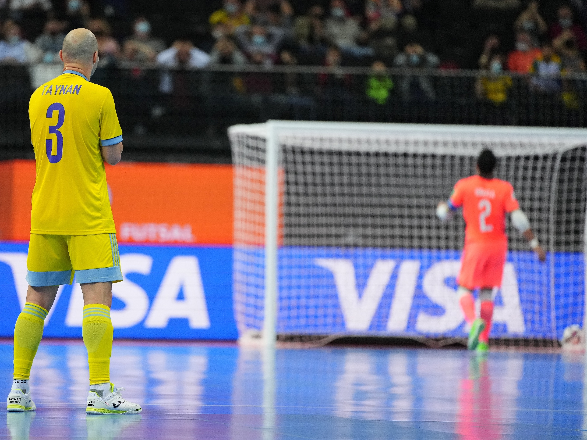

Futsal é o futebol adaptado para prática em uma quadra esportiva por times de 5 jogadores As equipes, tal como no futebol, têm como objetivo colocar a bola na meta adversária, definida por dois postes verticais limitados pela altura por uma trave horizontal. Quando tal objetivo é alcançado, diz-se que um gol foi marcado, e um ponto é adicionado à equipe que o atingiu. O goleiro, último jogador responsável por evitar o gol, é o único autorizado a segurar a bola com as mãos. A partida é ganha pela equipe que marcar o maior número de gols em 40 minutos divididos em dois tempos. EU GOSTUMMM DE FUTSAL...
contatos